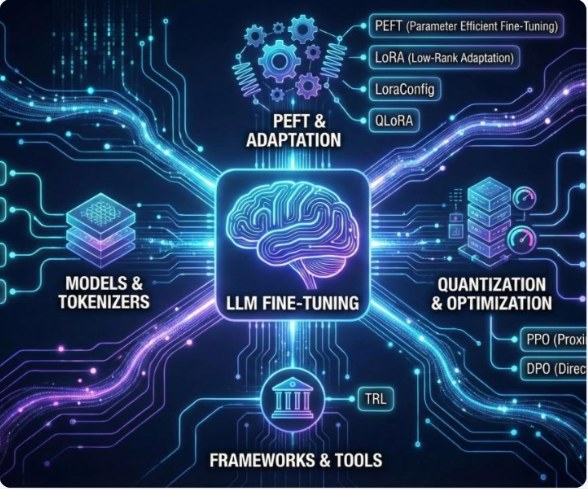
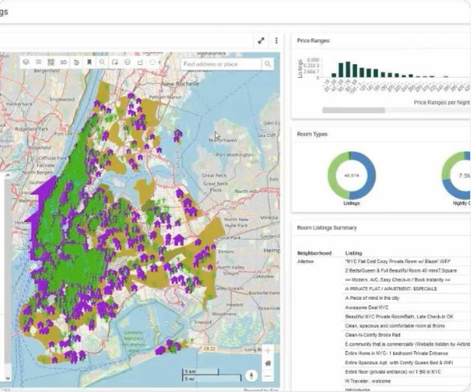
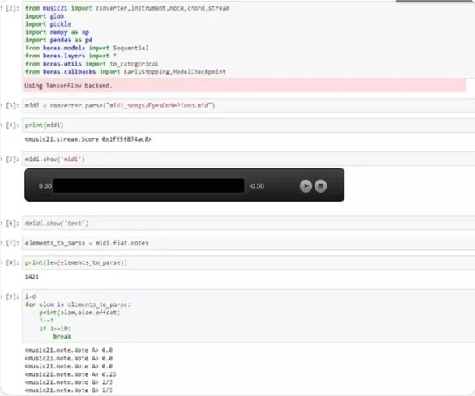
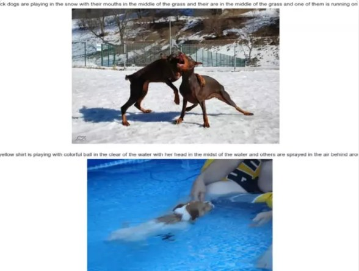
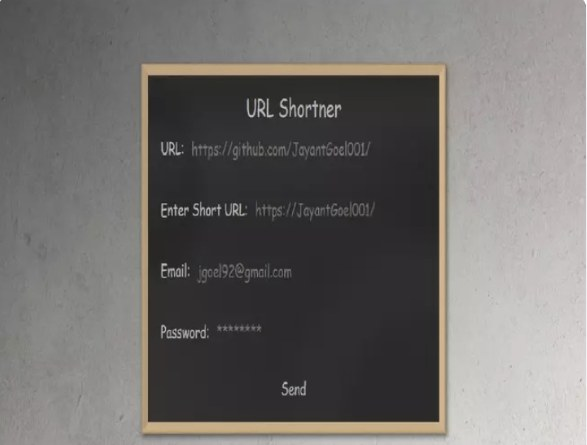
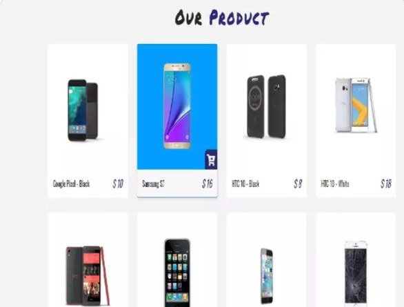

Languages
Python · Java · JavaScript · TypeScript · SQL
I'm Vinay Kumar Dokku, a full-stack software developer with 6 years of experience building scalable cloud-native applications using Python, FastAPI, React, Angular, AWS and Azure. I enjoy creating intelligent solutions with AI, clean APIs and thoughtful user experiences.

Years of software development experience
Building practical solutions across financial services, healthcare, and enterprise platforms.Software Developer experienced in delivering production-ready applications and enterprise solutions. My work spans microservices, API development, cloud infrastructure, AI-powered document processing and modern frontend development.
Tools and platforms include VS Code, Git, Docker, Kubernetes, Terraform, Jenkins, AWS, Azure, PostgreSQL, DynamoDB, MongoDB, FastAPI, Django, React, Angular, PyTest and Selenium.
Access Resume ↗Python · Java · JavaScript · TypeScript · SQL
React.js · Angular · HTML · CSS · Chakra UI
FastAPI · Django · Flask · Spring Boot · REST · GraphQL
AWS · Azure · Docker · Kubernetes · Terraform · CI/CD
PostgreSQL · DynamoDB · MongoDB · Airflow
OpenAI API · LLM workflows · PyTest · Selenium
Credit Risk — OneCredit Exposure Management
PACE & Clinical AI Platforms
Sales Training Portal

University of the Cumberlands

Wilmington University

CMR College of Engineering and Technology
Explore projects from my GitHub portfolio.

PEFT, LoRA, and efficient language-model adaptation.
View on GitHub ↗
Interactive machine-learning dashboard for NYC Airbnb listings.
View on GitHub ↗
Music generation experiments with Python and deep learning.
View on GitHub ↗
Computer vision and natural-language image captioning.
View on GitHub ↗
A web application for shortening and managing URLs.
View on GitHub ↗
Product catalog and shopping web application.
View on GitHub ↗“Keep learning. Keep building. Make every line of code count.”
Interested in collaborating or discussing a software engineering opportunity? I'd love to connect.